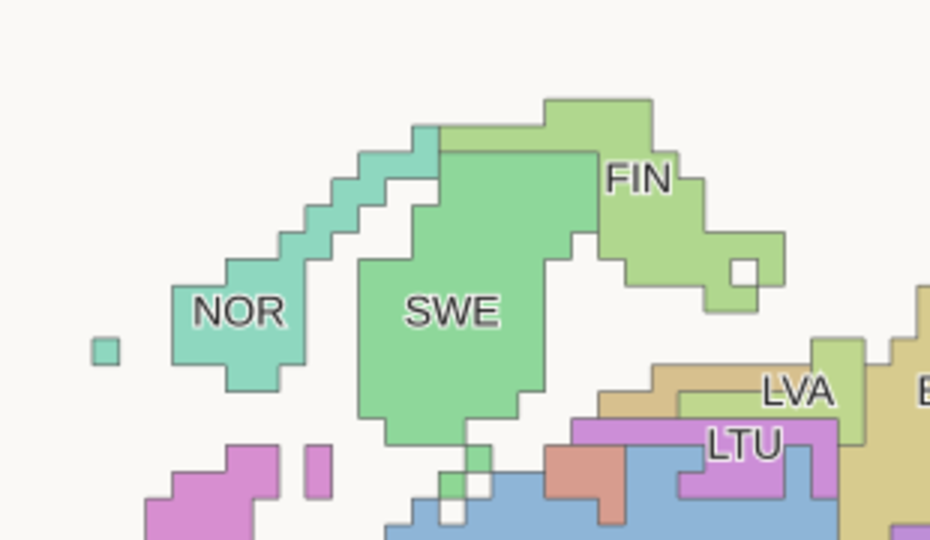
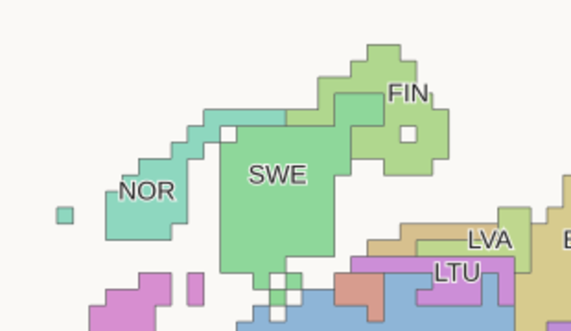
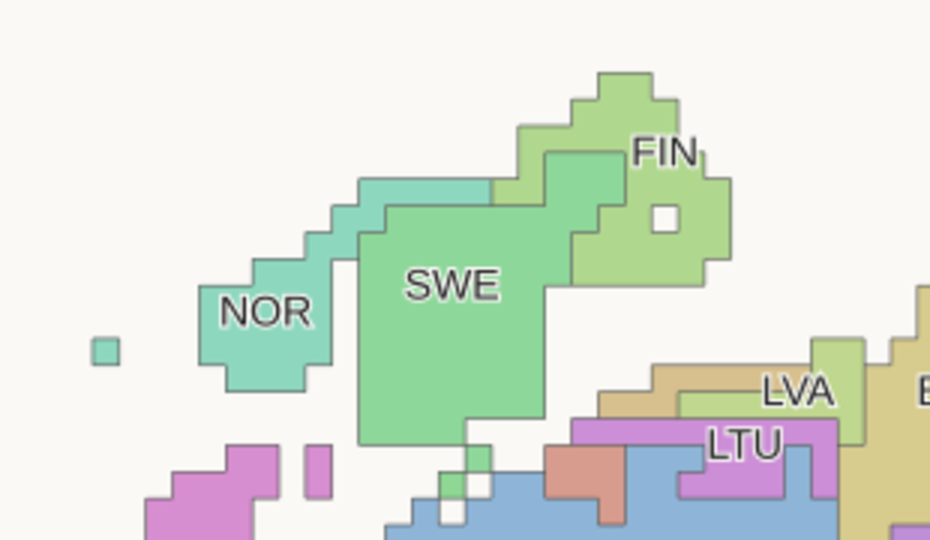
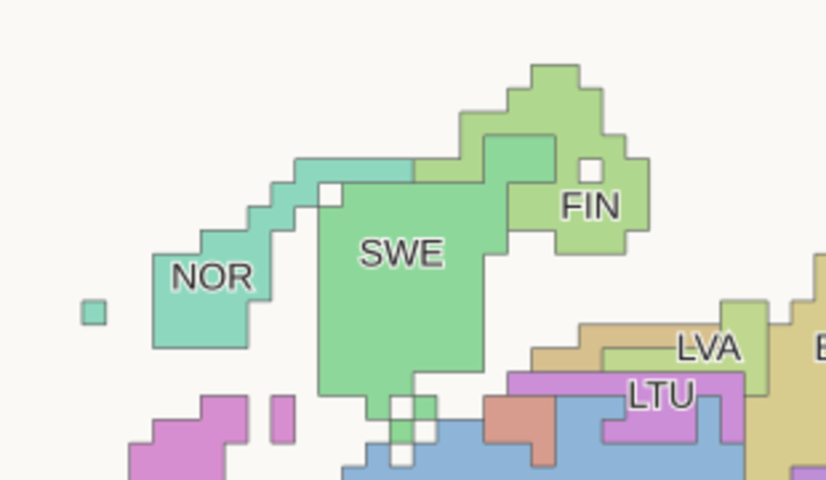
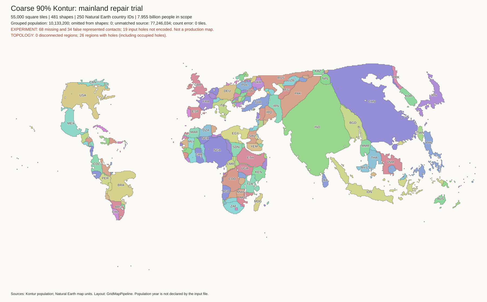
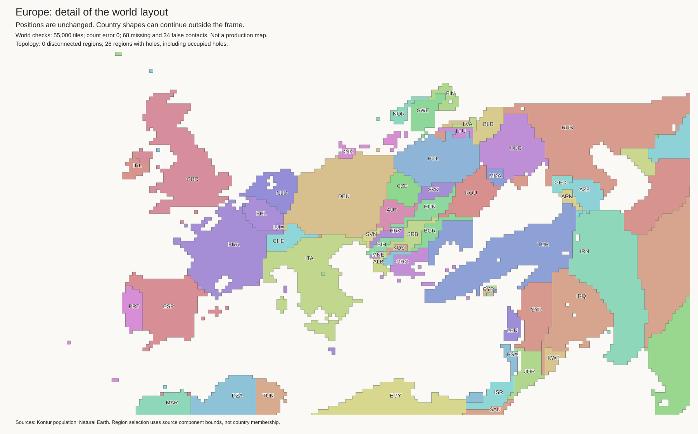
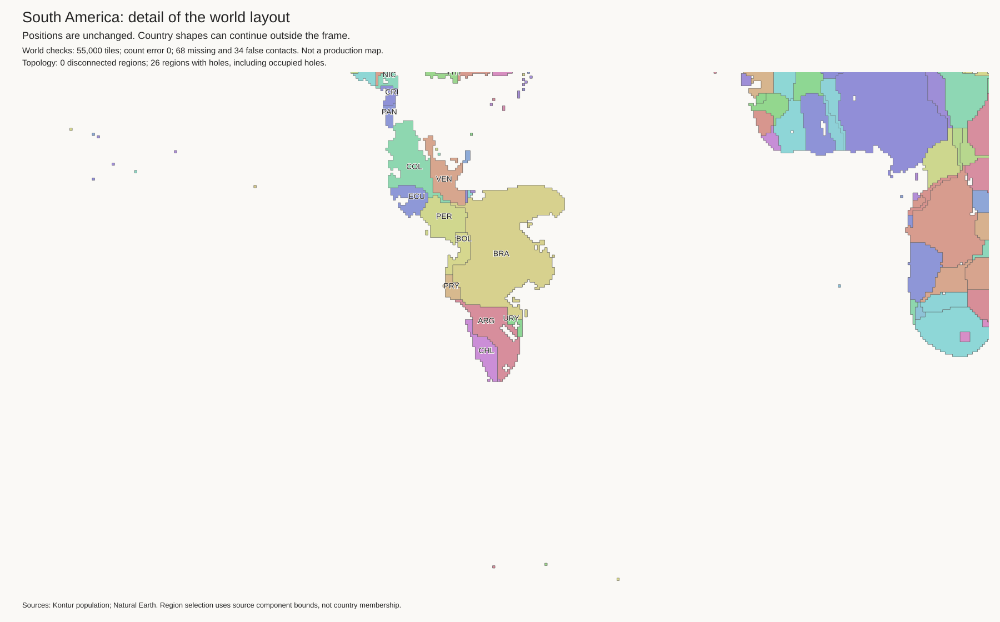

Research candidate. The current best and H3-MON data are unchanged. No strategic cuts.
All 55,000 tiles retain exact component budgets. All 481 components are connected. The 45 lakes use 220 empty cells. Lake shore checks pass.
| Check | Current best | Candidate |
|---|---|---|
| Finland touches Norway | True | True |
| Malaysia touches Thailand | False | True |
| Sweden touches Germany | True | False |
| Lithuania exterior-water edges | 0 | 2 |
| Paraguay exterior-water edges | 16 | 16 |
There are 68 missing and 34 false contacts. The current best has 73 and 48. The candidate gains 5 true contacts and loses 0. It removes 14 false contacts and adds 0. These totals do not prove correct geography.
Open issues include Paraguay's false coast, the Nordic shapes, and missing mainland connections. A coast can be mathematically valid but visually poor. Do not use this as a production map.
Checks and exact contact changes · Land tiles · Empty lake cells · Geographic audit
This trial starts from the previous joint Nordic fit. Only the main Norway, Sweden, and Finland components change. Only Lake Saimaa moves. The land budgets, 45 lake IDs, and 220 empty lake cells remain intact.

A further fit starts directly from the previous Nordic result. It adds sea connectivity but leaves Saimaa fixed. It removes the local unnamed holes, but Finland's lake extension remains. It also leaves a long water channel beside Norway. Fewer enclosed holes do not by themselves mean better geography. Control run · Control checks.

Keeping Saimaa at its old tile position forced Finland to retain an extension. Moving the empty lake three cells west and two north permits a shorter outline. The old lake cell becomes Finnish land; a Finnish interior cell becomes the lake. Finland does not gain or lose a tile. All original shore checks pass.
This is a placement experiment, not a verified source-geography transformation. The chosen move is the shortest nonzero valid interior move within five cells. The method cannot move shared-shore lakes. Lake move · Shape fit.

The next fit adds a water-flow constraint. Within the fit window, empty cells must connect to exterior water unless they are recorded lake cells. An independent flood fill checks the result. It removes the remaining unnamed gaps between Norway and Sweden and near Åland.
Compared with the previous joint fit, three unnamed enclosed-water cells disappear. No new ones appear anywhere in the world. All other components and lakes stay fixed. Global unnamed enclosed-water cells fall from 376 to 373. This is a small local change, not a global solution. Unnamed water can include real features; do not apply this rule globally without source-water checks.

Finland's perimeter falls from 52 to 46 tile edges. Sweden stays at 42. Norway rises from 36 to 38. Borders remain at 68 missing and 34 false. No true border is lost and no false border is added relative to the previous trial. The independent coast checks find no regression. Comparison checks.
A move three cells west and three north also gives a valid fit. It is farther from the old lake position, so it is not the selected trial. This comparison tests sensitivity to lake placement. Lake move · Fit.

Norway still has a narrow northern section. The Nordic group still lacks its Russian borders. Paraguay is unchanged. No current-best or H3-MON export is replaced.




